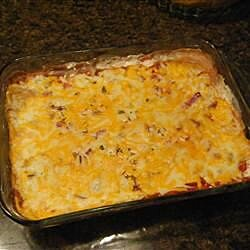

Spicy Bean Dip

Description
Whether pairing with a Mexican-themed dinner or a football game
with the bro's, this spicy bean dip is a real score!
Ingredients
- 1 (15 ounce) can refried beans
- 1 (15 ounce) can black beans, rinsed and drained
- 3/4 cup sour cream
- 1 cup salsa
- 1 (4 ounce) can diced jalapeno peppers
- 1 1/2 cups shredded colby cheese
- 1 cup salsa
- 1/4 cup sliced black olives (optional)
Steps
-
Preheat oven to 375 degrees F (190 degrees C).
-
Combine refried beans and black beans in the bottom of banking dish. Top with sour cream,
salsa, jalapenos, and cheese. Sprinkle with back olive slices, if desired.
-
Cover dish, and bake in preheated oven 15 minutes. Uncover, and bake until hot and bubbly,
about 15 additional minutes.
-
Note: use fewer jalapeno chilies for a less spicy dip.